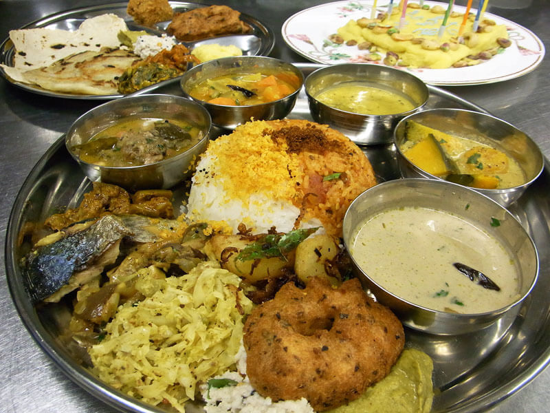
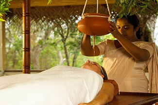
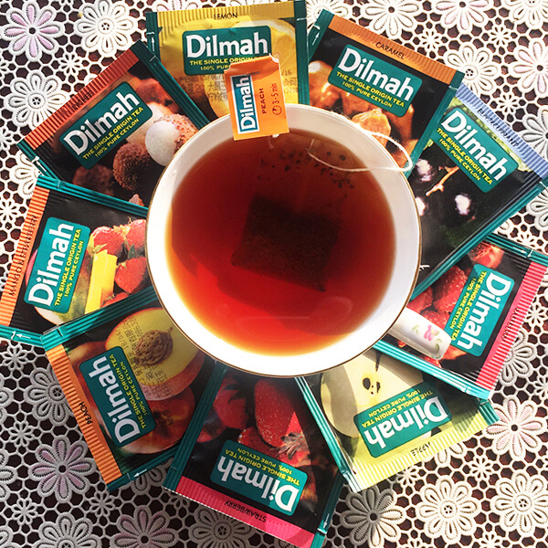

<シンハラ語・タミル語>
こんにちは： アユボワン
ありがとう：ストゥーティー
オススメサイト：ひらがな→シンハラ語変換：自分の名前を可愛いシンハラ語フォントで表示してくれます♪
（ダウンロード不要）
スパイスに宝石、紅茶にセンスのいい雑貨たち、そしてアーユルヴェーダ。
女の子が好きなものが網羅されている素敵な国！
たくさんの世界遺産（なんと８個も）にも恵まれた国でもあります。
日本と同じく島国だから、いろんな国のエッセンスをいいとこ取りした
バリエーションに富んだ食事が楽しめます。
しかもヘルシー！
＜東京ではココで体験可能＞
たまに文化体験のイベントを開催：ラクリヤ
（最近更新なくて寂しい・・）
スリランカ料理の講座：tadaku:綺麗になるスリランカ料理、習ってみては？
スリランカ料理の講座２：セイロンキッチン:料理教室だけでなくイベントもやっているようです。
宝石占い・ジュエリー：セイロンスター:上記のセイロンキッチンの姉妹店スリランカジュエリーショップ。占いもしてくれます。
カレーが有名だけど、島国ならではの各国のいいとこ取りしたメニューが楽しみ。
アーユルヴェーダに基づいてるからヘルシー
エッグロティやエッグホッパーも最高。食後の紅茶もお楽しみ。
＜東京ではココで体験可能＞
日本橋:キャンディ
平日限定ランチは980円で紅茶付き。ティータイムに行くと紅茶にシェフ特製デザートも付くとか。
水道橋：セイロンドロップ
カレーも食べれる紅茶専門店
沼袋：スジャータ
伝説のスリランカカレーが食べられるスリランカカレーバー
中目黒：セイロンイン
本場の雰囲気を味わえる店内も素敵
中野：アチャラナータ
スリランカをこよなく愛する日本人シェフのお店
渋谷：マリーアイランガニー
穴場
青山一丁目：スパイシービストロタップロボーン
人柄も最高なスリランカ人シェフのお店。スリランカについて楽しくおしゃべりできます♪門前仲町にも姉妹店があるようです。
自由が丘：ムレスナティーハイフン
有名なスリランカ紅茶のティーサロン。
最強のセイロンティーが飲める紅茶専門店
スリランカではライオンビールが有名
ラガーとスタウト二種類のスタイルが出ているけど、特にスタウトは最高。
これ、すでにアルコール度数8．8%もあるのに、本場ではアラック（ココナツ酒）で割って飲むんだとか。
暑い国のビールにしては珍しく濃厚な味わい。
スリランカと言えばアーユルヴェーダ。
アーユルヴェーダはインド発祥だけど、スリランカでは自国の医療と結びついて、
より生活と密着したものになっています。
＜東京ではココで体験可能＞
表参道：アーユシャ（生活の木）
スリランカにも店舗を持つ生活の木プロデュースのアーユルヴェーダサロン。
麻布十番：スニルアーユルケア院
スリランカ院長によるリーズナブルなサロン。
お土産にするなら紅茶やアーユルヴェーダコスメ、スパイスがオススメ。
＜東京ではココで体験可能＞
銀座・日本橋：スパセイロン
アーユルヴェーダコスメで綺麗になろう！
銀座（三越）・新宿（伊勢丹）：バシラーティ
缶も可愛い高級紅茶が買えます。
ネットショップのみ：ラクリヤ
センスのいいスリランカ雑貨が購入可能
西荻窪：エヌ・ハーベスト
スリランカのスパイスやハーブが手に入ります。
スリランカサリー
インドサリーと違って腰回りにフリルがあって可愛い
＜東京ではココで体験可能＞
ラクリヤ運が良ければ着付け教室を開催しています。
やっていなくても連絡をすれば出張で着付け可能でした。
＜ランチ＞キャンディ:日本橋
まずはランチでお得にスリランカ料理を楽しもう。
↓銀座線3分：170円
＜ショッピング＞スパセイロン:日本橋or銀座
＜ショッピング＞バシラーティ：銀座
コスメと紅茶をお持ち帰り♪
↓11分：170円（半蔵門線→大手町→丸の内線）
＜ティータイム＞青山ティーファクトリー：神保町
スリランカの紅茶でひとやすみ
↓半蔵門線10分：170円
＜エステ＞アーユシャ（生活の木）：表参道
本場仕込みのアーユルヴェーダサロンで内側から美しく！
↓半蔵門線2分：170円
＜ディナー＞スパイシービストロタップロボーン：青山一丁目
本物のスリランカ料理を堪能。
ランチ、ショッピング、ティータイム、エステ、ディナーという
盛りだくさんのツアーなのに、交通費680円（東京メトロの一日乗車券を使えば600円！）のスリランカの旅！
是非体験してみて！